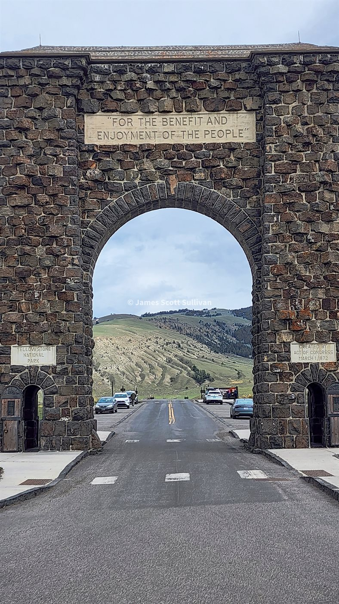
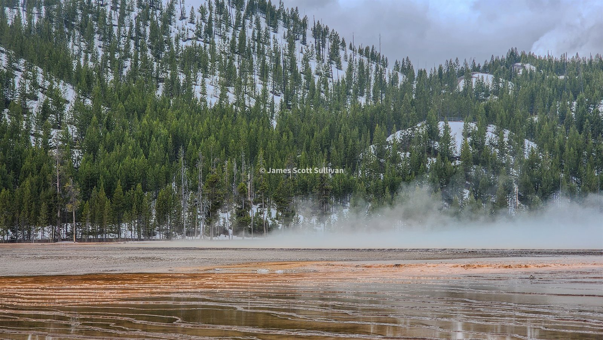
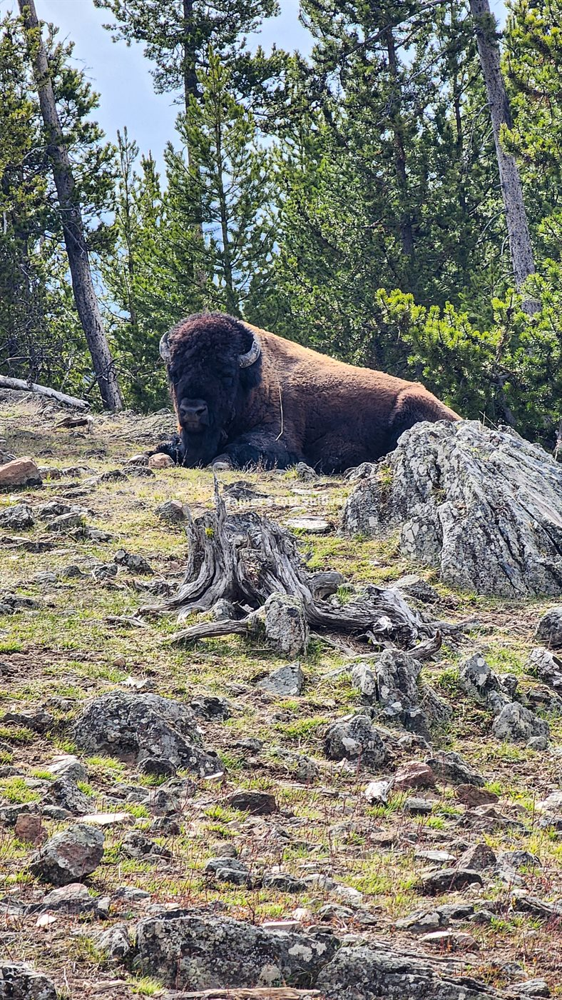
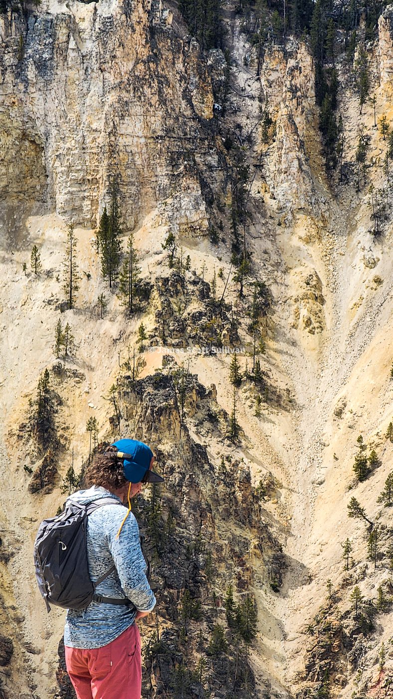

Cody felt like the right place to pause for a second and look around before going all the way into Yellowstone. I checked out the Buffalo Bill museum because people told me I should, and they were right. It was one of those stops that gives the landscape around you a little more texture. Then I got back in the car and pointed it toward the east entrance.
That drive into Yellowstone was one of those days where I kept pulling over because everything looked worth a stop. I met skiers. I met old SAR guys. I talked to anyone who seemed like they knew the area, and the best conversation came from one old timer who told me I had timed it perfectly. The east road had only opened two days earlier, a bunch of the park was still shut because of snow, and the real summer crowds had not fully arrived yet. Music to my ears.
That kind of information hits different when you are traveling alone and making it up as you go. It felt like getting waved through a door at exactly the right moment. I was hyped.

I kept driving, stopping, looking, wandering, and talking. That was really the rhythm of Yellowstone for me. I was not trying to speed-run it. I wanted to see what the park gave me if I stayed curious and kept my foot a little lighter on the gas. By the end of the day, I lucked into the very last spot at the only open campground. Perfect. I made a fire, let the whole thing sink in, and went to bed feeling like the road trip had stepped into a bigger room.
The next few days were more Yellowstone and then more people, which was a welcome change. Up to that point the trip had mostly been me, my car, my sleeping setup, and whatever stranger or ranger happened to be nearby. Then I met up with my friend Conor, who was working a season out in Big Sky running chainsaws. He had his own thing going on out there, but suddenly I had somebody to fish with, hike with, drink a beer with, and generally be a normal person around again.

Yellowstone itself felt huge and strange in the best way. Steam everywhere, snow still hanging on in spots, bison acting like they own the roads because they kind of do, and that constant reminder that this place is not polished up for you no matter how many boardwalks they put in. It still feels wild. It still feels older than the whole idea of a road trip.
That was the part I liked most. You can do all the classic stops and still feel like the land is not especially interested in performing for you. It is just there, doing its thing. You either slow down enough to take it in, or you don't.

Once I linked up with Conor, the energy of the trip changed a bit. We hiked around. We fished the Gallatin. We explored Bozeman. We found a place to crash for the night and spent a few days camping, fishing, and moving through the area without much pressure beyond seeing what we could see. It was one of those stretches that reminds you how good it feels to share a place with someone who is equally down for the plan to stay loose.
I had started this whole thing solo and I was still very much inside my own head most of the time, so having a friend in the mix gave the chapter a different shape. Less proving something. More just being out there.

Eventually, though, the pull north started winning again. That was the whole trip. I would find somewhere amazing, sink into it for a minute, and then start wondering what was over the next ridge, down the next highway, or farther up the map. Glacier had been sitting in my head for a long time, and I knew it was time to keep moving.
So I got out of there and kept heading north. That was really the lesson of this chapter. Yellowstone was incredible. Big Sky was a blast. Fishing the Gallatin with a friend was exactly the kind of break in the solo story that I needed. But the bigger thing was realizing that the West had finally stopped feeling hypothetical. I was in it now.
By the time I aimed the Subaru toward Glacier, I could feel the trip leveling up again. The places were getting bigger, the people were getting more memorable, and I was getting more comfortable letting the road shape the story as it went.